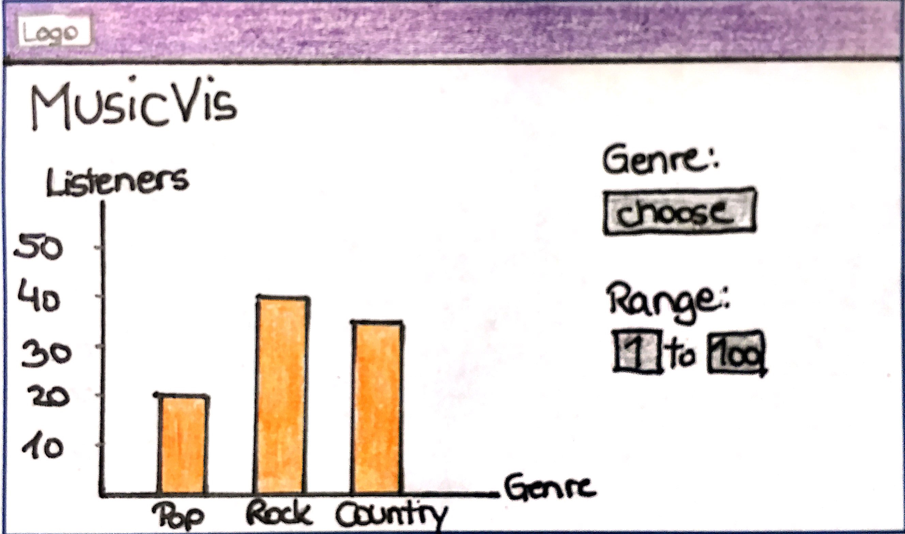
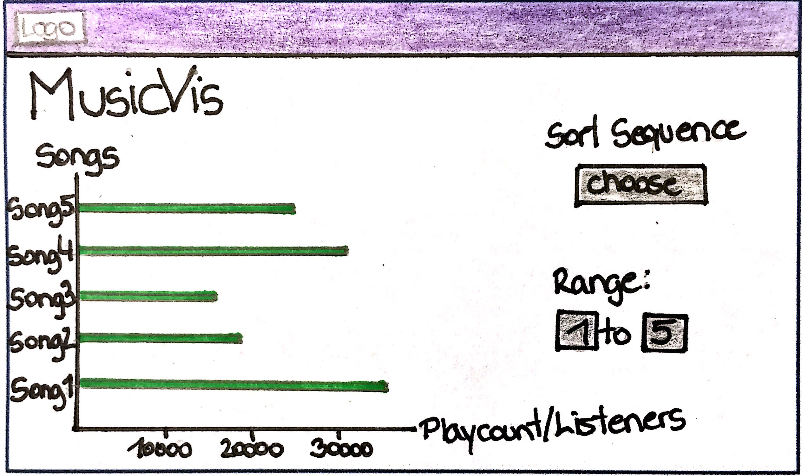
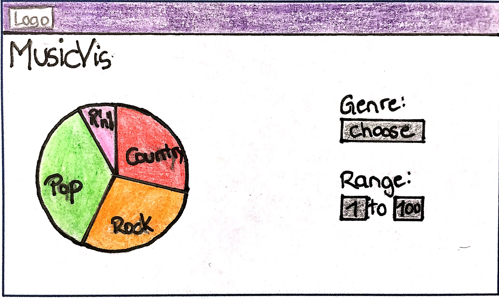

Visualization Solution
Interface 1:

Hier kann der Benutzer herausfinden, wie viele Songs es zu den ausgewählten Genres gibt. Zusätzlich muss er eine Range wählen (zB. die beliebtesten Songs von 1 bis 100), um das Ergebnis sinnvoll einzugrenzen.
Interface 2:

Im zweiten Interface werden die beliebtesten Songs nach Höreranzahl bzw. Playcount angezeigt. Hierbei muss der Benutzer auswählen, ob das Ergebnis sortiert oder unsortiert sein soll, außerdem in der Range auswählen, wie viele Songs angezeigt werden sollen.
Interface 3:

In unserem letzten Interface-Beispiel wählt der Nutzer die Genres aus, die er analysieren möchte und wie viele Songs zu dieser Analyse verwendet werden sollen (zB. die beliebtesten 100 Songs). Die Gewichtung der Tags werden hierbei herangezogen und in einem Tortendiagramm zusammengefasst angezeigt. Hier könnte man herauslesen zu welcher Musikrichtung die Hörer eher tendieren.
Vorteile:
Wir haben im Laufe dieser Veranstaltung gelernt, dass triviale Diagramme von den meisten Menschen sofort verstanden und verwendet werden können. Auf die breite Masse bezogen, verfehlen massive Visualisierungen somit oft ihr Ziel. Da MusicVis nicht nur auf Fachleute der Musikindustrie zugeschnitten ist, sondern von jedermann verwendet werden soll, setzen wir genau dieses erworbene Wissen jetzt ein.
Die Interfaces sind also aufgrund ihrer trivialen Art und den Möglichkeiten zur Eingrenzung/Filterung der Daten leicht zugänglich und liefern die gewünschten Ergebnisse mit einem Klick. Je nach Größe der Daten werden sämtliche Diagramme auf einem View zu sehen sein oder eben sinnvoll aufgeteilt.
Die genauen Filter haben wir noch nicht komplett festgelegt, hier kann und wird vermutlich noch einiges passieren.
Nachteile:
Die Nachteile dieser einfachen Visualisierungen hängen von der Größe der anzuzeigenden Datenmenge ab. Wenn jemand eine Visualisierung aller Daten sehen möchte, kann es unter Umständen recht unleserlich werden. Jedoch werden wir dem vorbeugen und je nach gewähltem Datensatz die Diagramme dementsprechend ausrichten.
Sollten wir auf unüberwindbare Probleme stoßen, werden wir nicht zögern und das Interface dementsprechend ändern.